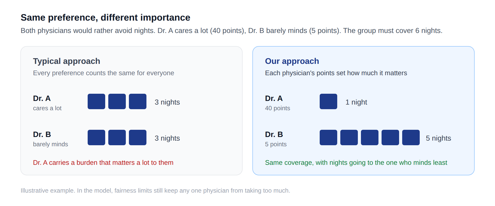

Doctoral research · Healthcare
Personalized physician scheduling
Translating clinician priorities and hospital requirements into multi-site scheduling models that balance coverage, fairness, and individual preferences.
Explore the work →